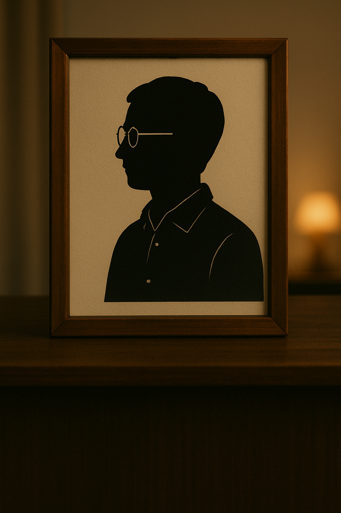
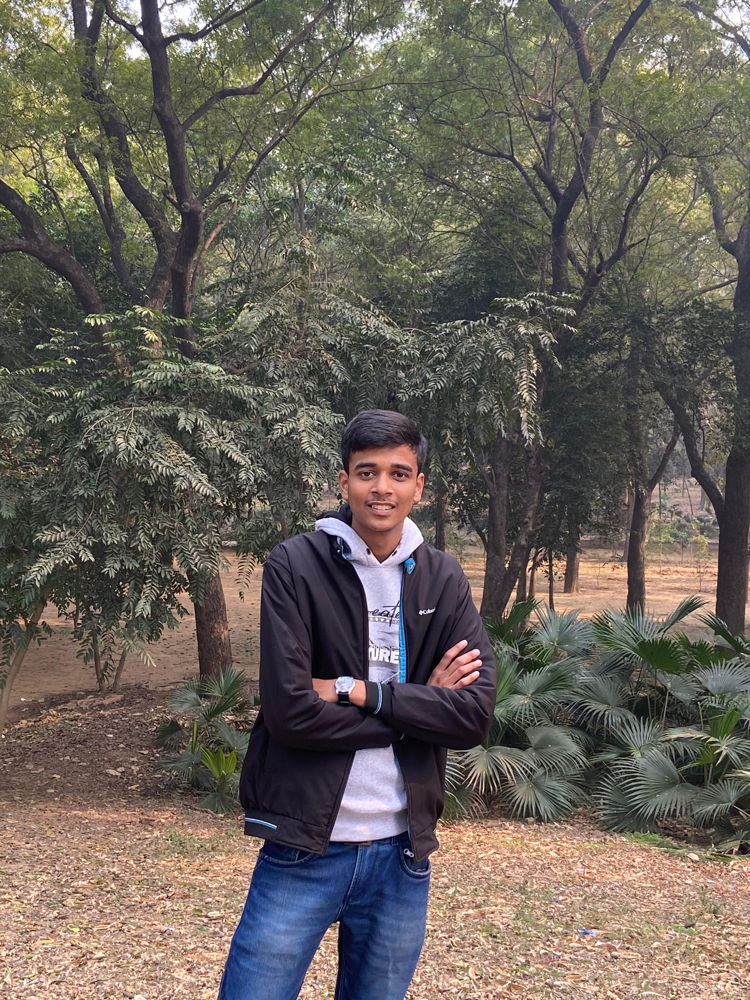

About Us
Whether you're feeling joyful, nostalgic, heartbroken, overwhelmed, or simply bored, our mission is to guide you toward content and experiences that reflect and honor your emotional state.
Powered by intelligent technology and a deep, human-centered understanding of emotional patterns, our platform goes beyond generic suggestions. We thoughtfully curate personalized movie recommendations, handpicked entertainment options, and even immersive getaway ideas — all designed to align with your unique mood, in the moment.
We're more than just an algorithm — we’re your empathetic companion, ready to help you set the perfect atmosphere for whatever you're feeling, wherever you are.
Because we understand one simple truth: when the mood is right, everything feels better.

About the Owner
Moody Movies was founded by Shiv Prakash Tiwari, a passionate storyteller and emotional wellness advocate who believes that entertainment should do more than just pass the time — it should heal, uplift, and connect.
With a unique blend of expertise in both psychology and media, Shiv envisioned a platform that goes beyond traditional entertainment. He created Moody Movies as a safe and engaging space where individuals can discover content that aligns with their emotions and mental state, offering comfort, inspiration, and a sense of belonging.
Shiv’s mission is rooted in empathy, authenticity, and the transformative power of storytelling. By thoughtfully curating films, shows, and experiences that reflect the diverse emotional landscapes of life, Moody Movies seeks to support viewers not only in moments of joy and laughter but also during times of vulnerability and reflection.
Driven by innovation and a deep understanding of human emotion, Shiv continues to lead Moody Movies with a clear vision: to seamlessly weave emotional well-being into the fabric of everyday entertainment — making it more mindful, meaningful, and emotionally enriching for everyone.

Location